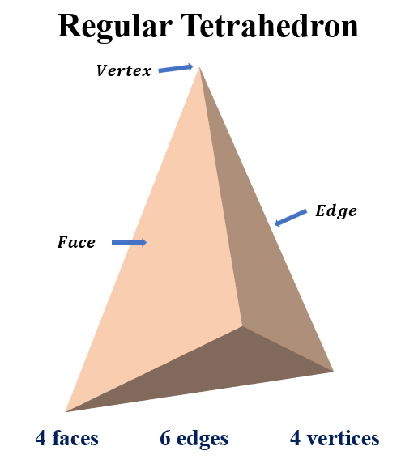
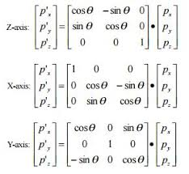
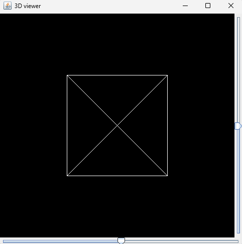
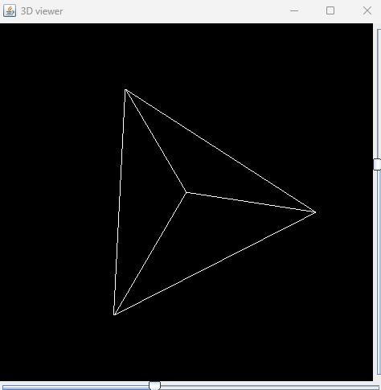
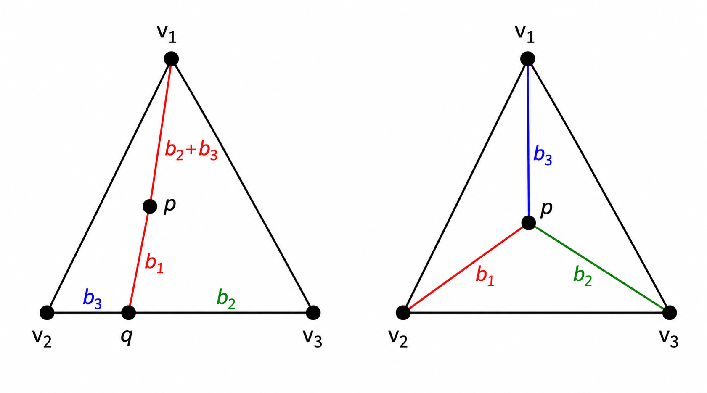
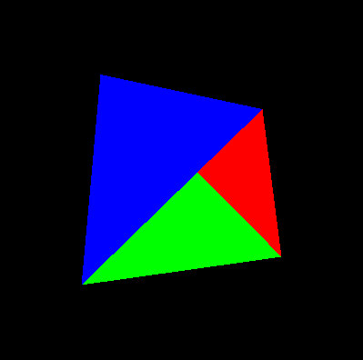
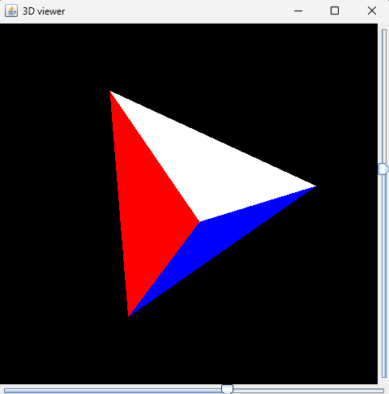

Understanding the fundamentals of 3D graphics through software rendering
Most modern applications use graphics APIs such as OpenGL, DirectX, or Vulkan to render 3D objects. I wanted to understand what happens behind those APIs, so I built a small 3D renderer using only Java Swing and basic mathematics.
The goal was simple:
By the end of the project I had a software renderer capable of drawing and rotating a tetrahedron completely on the CPU, without relying on any GPU acceleration.
The renderer uses a tetrahedron made of four triangular faces. This geometric shape is perfect for learning because it's simple enough to understand but complex enough to demonstrate key rendering concepts.
Each triangle consists of three vertices:
new Vertex(x, y, z)Representing the model as triangles mirrors how modern graphics hardware works internally. GPUs are optimized for triangle rasterization because:

To rotate the tetrahedron, I used rotation matrices. These are fundamental mathematical tools for transforming 3D coordinates around the X, Y, and Z axes.
Rotation matrices allow us to apply transformations systematically:

By combining these matrices, we can achieve any arbitrary rotation in 3D space. The user interface provides sliders to control each axis independently.
The first version of the renderer ignored the z-coordinate completely. This simplified approach allowed me to verify that the matrix transformations were working before adding depth complexity.
Using Java's Graphics2D and Path2D classes, each triangle edge was drawn as a line. This produced an orthographic wireframe view of the tetrahedron.


Although simple, this step verified that the matrix transformations were working correctly before moving to more complex rendering techniques.
Barycentric coordinates express a point as a weighted combination of the triangle's vertices. They consist of three values (b1, b2, b3) that describe how much influence each vertex has on a pixel.
This technique is fundamental to triangle rasterization—the process of converting a triangle's continuous geometry into discrete pixel colors.

Besides determining triangle membership, barycentric coordinates can also interpolate values across a surface. This is crucial for:
After rasterization, another problem appeared. Triangles were rendered in the order they were stored in memory. This meant a triangle behind another could incorrectly appear in front—a depth ordering issue.
To solve this, I implemented a z-buffer (also called a depth buffer), a technique used by virtually all modern graphics hardware.
The z-buffer algorithm works in four steps:
Visual Comparison:


The left image shows rendering without depth testing—faces overlap incorrectly. The right image shows the result after implementing the z-buffer—proper depth ordering is maintained.
Building a graphics renderer from scratch presented several debugging challenges that provided valuable insights:
This project covered essential concepts in computer graphics and 3D mathematics:
These fundamentals apply to all rendering systems, from real-time game engines to offline rendering frameworks.
Building a renderer from scratch was a very interesting experience. I had previously used graphics APIs (OpenGL), but implementing the entire pipeline manually provided a much deeper understanding of how 3D graphics work.
Rather than treating graphics libraries as black boxes, I now understand the mathematical and algorithmic foundations that make them possible. This knowledge makes me a better programmer when working with graphics APIs— I can write more efficient code and debug rendering issues more effectively.
If you're interested in computer graphics, I highly recommend building a simple renderer yourself. The experience is invaluable for understanding modern graphics systems.
📖 View Source Code on GitHub